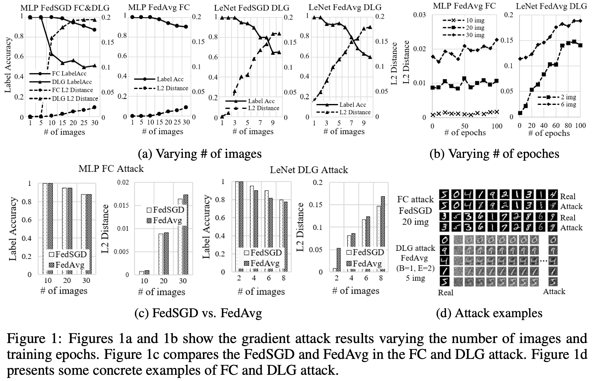
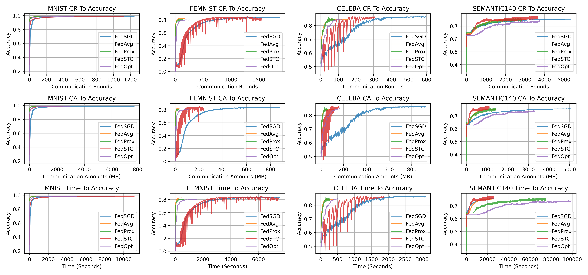

4. Benchmarks¶
Here we report a benchmarking study on five most well-known FL mechanisms using iSpree model.
4.1. Experiment Settings¶
Benchmarking FL mechanisms: We have chosen the following five FL mechanisms which target different issues in the benchmarking:
FedSGD [1]: FedSGD inherits the settings of large-batch synchronous SGD in data centers [], and it is the one of the most fundamental FL mechanisms.
FedAvg [1]: FedAvg is a communication efficient mechanism, which aggregates the parameters trained by multiple rounds clients’ local training.
FedProx [2]: FedProx targets the non-IID data problem, and tries to improve the FedAvg using a regularization on the distance between the global model and local model, such that the negative impact caused by the non-IID data is reduced. We fix the regularization’s weight to 0.01 in the benchmark.
FedSTC [3]: FedSTC proposed a sparse ternary compression (STC) method in FL, such that both the uploading and downloading parameters are compressed to improve the communication efficiency. We fix the compression rate to 0.1 in the benchmark (i.e., only 10% of the most significant parameters are uploaded).
FedOpt [4]: FedOpt proposed to use the adoptive optimization methods in FL. Three optimizations, including FedAdagrad, FedYogi, and FedAdam, are proposed. And we chose FedAdam in this paper’s benchmarking study.
Datasets and Hyperparameters: We have used four datasets in the experiments: MNIST, FEMNIST, CelebA, and Sent140. We use 100 clients in all the experiments. Following previous work, we use \(B\), \(C\), and \(E\) as the parameters of FL mechanisms, \(B\) is the local batch size, \(C\) is the ratio of clients that participate in each round of training, and \(E\) is the number of local training passes (i.e., number of epochs).
Table 1 Finetuned Hyperparameters
| Datasets | #Device | #Sample | Model | Parameters |
|---|---|---|---|---|
| MNIST | 100 | 300 | 2-layer MLP | (FedSGD, FedSTC) -> LR=0.5 (FedAvg, FedProx, FedOpt) -> B=16,LR=0.1 |
| FEMNIST | 100 | 137 | LeNet | (FedSGD, FedSTC) -> LR=0.1 (FedAvg, FedProx, FedOpt) -> B=8,LR=0.05 |
| CelebA | 100 | 24 | LeNet | (FedSGD, FedSTC) -> LR=0.1 (FedAvg, FedProx, FedOpt) -> B=4,LR=0.05 |
| Sent140 | 100 | 140 | 2-layer LSTM | (FedSGD, FedSTC) -> LR=0.05 (FedAvg, FedProx, FedOpt) -> B=4,LR=0.0001 |
Table 1 shows the four benchmarking datasets that we used in the experiments, and the corresponding finetuned parameters. We use 100 clients in all the experiments. We set \(B=\infty,C=1\), and \(E=1\) for FedSGD, empirically chose B and E for FdAvg, then perform a fine-grained search on learning rates from \(0.0001 \sim 1.0\). The best hyperparameters are shown in \Cref{tab:dataset}. The parameter-searching results (e.g., tuning learning rates) are presented in the appendix \ref{appendix:params_tune}. For datasets that are not collected in FL style (e.g., MNIST), we simulate the non-IID data by restricting the number of clients’ local image classes. For example, The experiments of clients have 1 class of MNIST images are reported in robustness benchmarks. For datasets collected in FL manner (i.e., the samples are organized by who generated them), we partition the data naturally based on the identity and randomly shuffle the data between clients to create an ideal IID data setting. To simplify the comparison, we only present the non-IID data results in the robustness evaluation and use the IID setting in other experiments.
All the experiments run on a Linux server with 8-core 3.7GHz CPU, 128GB RAM. We limit the clients’ bandwidth to 100Mb/s and do not restrict the server’s bandwidth. We set the network latency to 50ms.
4.2. Incentive Evaluation¶
All these five FL mechanisms output the same model for all clients, which cannot guarantee the fairness. A good HFL mechanism should be able to allocate different versions of models to clients, such that the clients that contribute high-quality data receive models with better performance and the clients that use randomly generated data receive no valid model parameter.
4.3. Security and Privacy Evaluation¶
4.3.1. Model Security Evaluation¶
Data Poisoning and Model Poisoning Attacks: All the five benchmarking FL mechanisms (i.e., FedSGD, FedAvg, FedProx, FedSTC, and FedOpt) are vulnerable to data poisoning and model poisoning attacks, since they have no verification schema during the server’s aggregation. To defense against such attacks, the server needs to filter out the poisoned models before the aggregation, i.e., viewing the poisoned models as outliers.
Incentive Frauds: These five benchmarking FL mechanisms are also vulnerable to incentive frauds. The reason is that the participants could overfit the local model to the evaluation datasets to gain more incentive, and the clients could also collude to perform a group fraud (i.e., overfitting their models to the joint test datasets). And there is no defending solution designed in these five mechanisms, making the system vulnerable to frauds.
4.3.2. Data Privacy Evaluation¶
Before Training (Qualitative Analysis): All these five FL mechanisms leak the model structure to the clients before the training, thus cannot be directly used in the scenarios when the model structures are private.
During Training (Qualitative Analysis): All these five FL mechanisms adopt no privacy-preserving techniques, homomorphic encryption), thus leak intermediate results to the semi-honest server. The server could recover private data using gradients attacks from the intermediate results. However, the effectiveness of gradients attack is influenced by many factors, existing work has shown that the DLG attack is not effective when the systems are using gradients compression method or adding differential privacy noise to the data. Thus FedSTC is secure under the DLG attack since it used gradient compression method, and the other four methods (FedSGD, FedAvg, FedProx, and FedOpt) cannot be exempted.
After Training (Qualitative Analysis) All these five FL mechanisms distributes the converged model to participants without protection, thus cannot defense against model inversion attacks.
During Training (Quantitative Analysis): We perform a quantitative benchmarking study between FedSGD and FedAvg regarding defending against the gradients attacks. Because they represent two different FL training paradigms, the FedSGD aggregates parameters from all clients, and each client only performs very few local updates (i.e., one round of local training), while the FedAvg, FedProx, and FedOpt only aggregate parameters from a subset of clients and each client run more rounds of local training. Intuitively, the training paradigm of FedAvg has better performance in concealing the private data because the uploaded gradients are generated by multiple rounds of local training.

In the gradient attack experiments, we calculate the gradients using parameters from two adjacent training steps. The attack results are evaluated using the label accuracy and L2 distance between attack results and real data. Data label is one of the outputs in the DLG attack. Thus we can directly compute its accuracy. In FC attack, we use a well-trained CNN model to determine whether the attack outputs and real images have the same label. To further compare FedSGD and FedAvg and demonstrate what affects the results of gradient attacks, we perform experiments in the following aspects: (1) Varying the number of images in FedSGD and FedAvg: The first two subplots in Figure 1(a) show the attack results varying the number of images. With the increasing number of images, the label accuracy drops, and L2 distance rises in both FedSGD and FedAvg. Thus the gradient attacks are more difficult when the clients have more images. (2) Varying the number of epochs in FedAvg: Since the number of local training epochs (i.e., E) in FedSGD is fixed to one, we only present the attack results of FedAvg when changing the value of \(E\), and Figure 1(b) shows the results. With the increasing number of training epochs, the L2 distance significantly rises in the DLG attack and slightly grows in the FC attack. We can conclude that the gradient attacks are more difficult when the clients perform more local training steps before uploading the parameters to the server. Moreover, the FC attack is less sensitive to \(E\) compared with the DLG attack, and its attack error (i.e., L2 distance) on ten images is still very low when the clients perform 100 rounds of local training. (3) FedSGD vs. FedAvg: Figure 1(c) compares the attack results on FedSGD and FedAvg (B=1, E=20). In the FC attack, the label accuracy of FedSGD and FedAvg are very close, but the L2 distance of FedAvg is larger. In the DLG attack, FedAvg has lower attack label accuracy and larger L2 distance compared with FedSGD. In front of the FC attack, FedSGD has a better performance. In contrast, FedAvg has better performance under the DLG attack. One likely reason is that the FC attack is not easily influenced by the number of clients’ local training steps. (4) FC attack vs. DLG attack: The first subplot in Figure 1(a) compares the attack results of FC and DLG. These two methods’ attack performances are almost the same when the client has five (or fewer) images. However, when the client has ten or more images, the FC attack significantly outperforms the DLG attack model (i.e., FC attack has higher label accuracy and lower L2 distance).
Figure 1(d) shows some concrete attack examples. The restored images are clear, and the digits can be recognized. We can conclude that both FedSGD and FedAvg have privacy issues. FedAvg performs better than FedSGD in resisting the DLG attacks. Figure 1(d) also illustrates that the DLG attack results on FedAvg are fuzzier than FedSGD. FedSGD has better performance under the FC attack compared with FedAvg. Meanwhile, gradient attacks are more difficult when the clients have more images or perform more local training epochs. Then following equation shows the evaluation results regarding data privacy between five mechanisms.
4.4. Robustness Evaluation¶
Table 2 Robustness Evaluation
| Dataset | Data | $Psi$ | Local | Central | FedSGD | FedAvg | FedProx | FedSTC | FedOpt |
|---|---|---|---|---|---|---|---|---|---|
| MNIST | IID | 0.00603 | 0.86944 | 0.98483 | 0.98185 | 0.98282 | 0.98500 | 0.98467 | 0.98520 |
| MNIST | Non-IID | 0.01925 | $-$ | $-$ | 0.98220 | 0.96863 | 0.97200 | 0.98443 | 0.96067 |
| FEMNIST | IID | 0.00316 | 0.43593 | 0.85121 | 0.85556 | 0.85201 | 0.81286 | 0.82213 | 0.79803 |
| FEMNIST | Non-IID | 0.00729 | $-$ | $-$ | 0.83617 | 0.81918 | 0.78459 | 0.76264 | 0.77092 |
| CelebA | IID | 0.03025 | 0.61757 | 0.88818 | 0.88033 | 0.88454 | 0.87000 | 0.86333 | 0.84533 |
| CelebA | Non-IID | 0.04213 | $-$ | $-$ | 0.87300 | 0.84667 | 0.85533 | 0.72333 | 0.83167 |
| Sent140 | IID | 0.01099 | 0.71453 | 0.77850 | 0.77297 | 0.76818 | 0.74775 | 0.76918 | 0.75466 |
| Sent140 | Non-IID | 0.01740 | $-$ | $-$ | 0.76178 | 0.75651 | 0.75236 | 0.76987 | 0.74153 |
| Average | IID | $-$ | 0.65936 | 0.87568 | 0.87267 | 0.87188 | 0.85390 | 0.85985 | 0.84580 |
| Average | Non-IID | $-$ | $-$ | $-$ | 0.86329 | 0.84774 | 0.84107 | 0.81006 | 0.82619 |
Table 2 shows the robustness evaluation on five FL mechanisms. Currently, we mainly focus on evaluating non-IID data problems. The evaluation of system uncertainties will be done in the future. Briefly, the non-IID data brings negative impact to all FL mechanisms. We have calculated the average accuracy on four datasets. FedSGD achieves the best performance and only brings 0.9% accuracy loss. The efficacy of FedAvg and FedProx are very close under non-IID setting, thus they have similar performance. FedSTC has the lowest accuracy, thus has the worst performance regarding the non-IID issue. We also reported the average data distribution divergence (i.e., \(\Psi\)) in Table 2. \(\Psi\) is significantly larger in non-IID data compared with the IID setting, which shows the reason for the efficacy loss. Following equation shows the comparison regarding the robustness between five mechanisms.
4.5. Efficacy Evaluation¶
Table 2 shows the efficacy evaluation on four datasets. Compared with clients’ local training, all these five FL mechanisms significantly improve the model efficacy, which shows FL’s effectiveness. On average, the efficacy is improved by 19%\(\sim\)21% local training. In most cases, if we select appropriate parameters, both FedSGD and FedAvg can reach similar accuracy as central training, while the other methods, FedProx, FedSTC, and FedOpt show 2%\(\sim\)3% efficacy loss compared with central training. The following equation shows the comparison regarding the efficacy.
4.6. Efficiency Evaluation¶

Figure 2. Efficiency Evaluation. Each line in the figure represents the test accuracy of a particular FL mechanism from the training start to reaching the best validation loss. The communication amount are the sum of sending and receiving messages of the individual client.
Figure 2 shows the efficiency evaluation results. We use three types of figures: communication round (CR) to accuracy, communication amount (CA) to accuracy, and time to accuracy to do the assessments. Regarding the CR, we can observe that FedSGD and FedSTC usually require more rounds to reach the best accuracy compared with the other three methods. Regarding the CA, FedSGD requires the largest amount of transmission data. The other four mechanisms have close capabilities on MNIST, FEMNIST, and CelebA datasets. And on the Semantic140 dataset, FedSTC has the best CA performance. Regarding the time consumption, FedAvg, FedProx, and FedOpt perform better than FedSGD and FedSTC on MNIST, FEMNIST, and CelebA datasets, however, the results are opposite on Semantic140, FedSGD and FedSTC have the best performance. The reason is that FedAvg, FedProx, and FedOpt have increased the clients’ local training workload, which significantly increases the local training time when the model and datasets are large. The following equation shows a comparison between these five mechanisms, while the performance are different when the datasets are small or large.
4.7. Reference¶
[1] McMahan, Brendan, et al. “Communication-efficient learning of deep networks from decentralized data.” Artificial intelligence and statistics. PMLR, 2017.
[2] Li, Tian, et al. “Federated optimization in heterogeneous networks.” arXiv preprint arXiv:1812.06127 (2018).
[3] Sattler, Felix, et al. “Robust and communication-efficient federated learning from non-iid data.” IEEE transactions on neural networks and learning systems 31.9 (2019): 3400-3413.
[4] Reddi, Sashank, et al. “Adaptive federated optimization.” arXiv preprint arXiv:2003.00295 (2020).